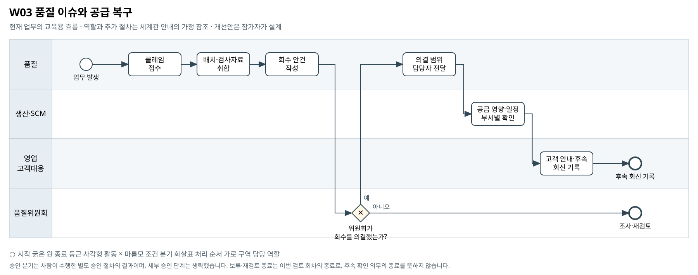

품질 이슈와 공급 복구
품질 판정과 고객 공급 일정이 분리돼 있을 때 어떤 사실을 연결해야 과잉 대응과 대응 지연을 줄일 수 있는가?
BPMN 2.0 편집 원본 · 도식 크게 보기 · 8개 도식집 PDF


승인 분기는 사람이 수행한 별도 승인 절차의 결과이며, 세부 승인 단계는 생략했습니다. 보류·재검토 종료는 이번 검토 회차의 종료로, 후속 확인 의무의 종료를 뜻하지 않습니다.
기존 자료의 단초
- 품질 회수 판정 단위는 생산 배치이며 규격이탈 확정 불량률 10% 이상이 회수 대상 기준으로 제시돼 있다.
- 회수 실행은 품질위원회 의결 사항이다. 원인 규명 완료와 회수 요건 충족은 별도로 다룬다.
- 예비검사 보류와 확정 불량을 구분해야 하며 미확정 언론 보도만으로 전면 회수를 판단하지 않는다.
- 배치·로트·품질 클레임·출하 연결 자료가 존재하지만 공급 복구 절차 전체가 제공된 것은 아니다.
주최 측의 교육용 업무 가정
- [교육용 가정] 품질팀이 클레임과 배치 자료를 모아 위원회에 제출하고, 의결 후 영업·생산이 후속 일정을 수작업으로 확인하는 흐름이다.
- [교육용 가정] '회수 의결'이 없는 경로는 조사 계속 상태로 끝난다. 기준 충족 건의 회수를 인과관계 미확정만으로 지연해도 된다는 의미가 아니다.
- [범위] 공급 복구 수량·일정·담당자의 구체 규칙은 새로 정의할 영역이며 도식이 복구 해법을 지정하지 않는다. 여기 나열한 보완 항목은 선택 예시다. 필수 확장과 다른 부서 영향의 기준은 A01을 따른다.
미해결 지점
- 품질 출하 연결 SBL 계열과 재무 출하 SH 계열을 일대일 연결하는 검증된 매핑이 없다.
- 회수 대상 제품의 실제 재고 위치·고객 보유량·회수 실적 자료가 없다.
- 대체 생산 또는 재공급 일정과 품질 재승인 이력이 없다.
확장할 때 생각할 질문
- 회수 범위 확인과 공급 복구 중 어느 병목에 집중할 것인가?
- 출하 식별자가 연결되지 않는 경우 어디까지 확정하고 무엇을 보류할 것인가?
- 품질 판정이 정정됐을 때 어떤 부서의 기존 기록을 다시 확인해야 하는가?
보완할 수 있는 데이터
- 검증된 배치-출하-납품처 매핑
- 품질위원회 의결·정정 이력과 회수 접수 기록
- 재공급 요청·생산 가능일·품질 확인 회신
관련 원본 자료
- 00_common/Business_Process_Map.md
- 00_common/data_dictionary.md
- 00_common/approval_authority_policy.md
- 00_common/calculation_definitions.md
- 01_corevia/quality/quality_policy_cv.md
- 01_corevia/quality/qc_claims_cv.csv
- 01_corevia/quality/shipment_batch_link_cv.csv
- 01_corevia/production/prod_batch_log_cv.csv
- 01_corevia/sales/sales_shipments_cv.csv
- 05_external/news/ext_news_quality_incident.md
그림의 관계가 원본 파일의 모든 연결키 제공을 뜻하지는 않습니다. 원본에서 확인한 관계와 추가한 매핑·가정을 구분하십시오.